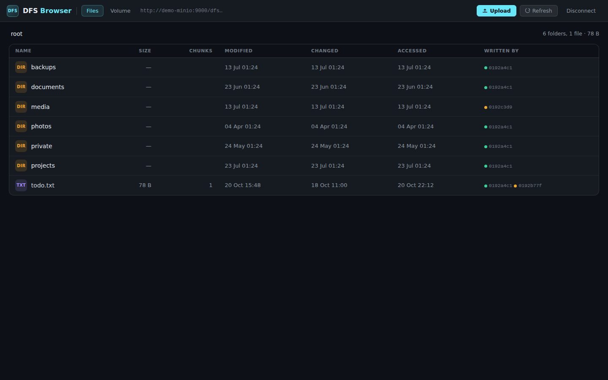
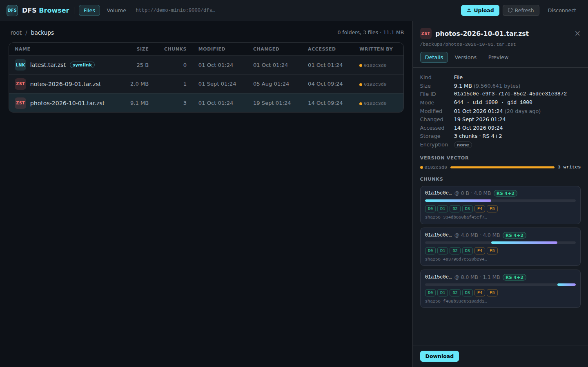
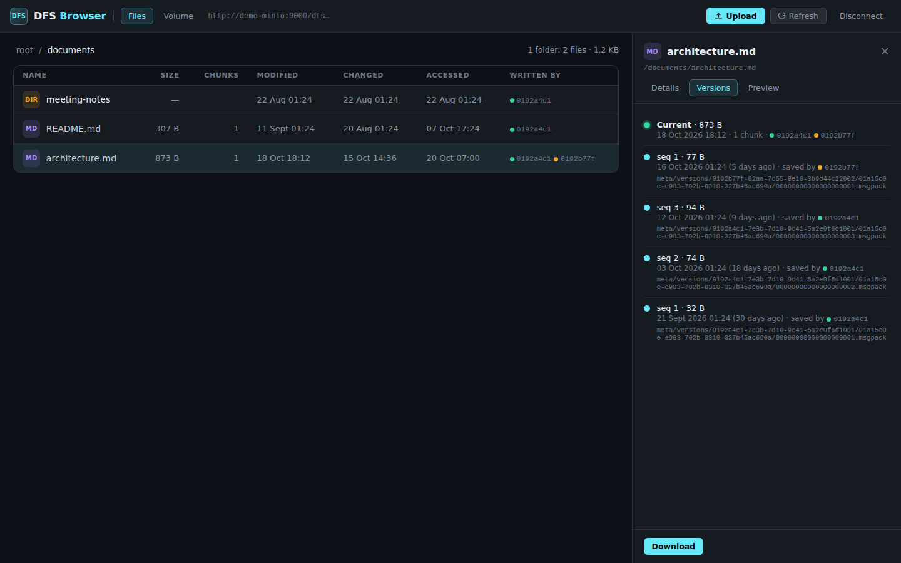
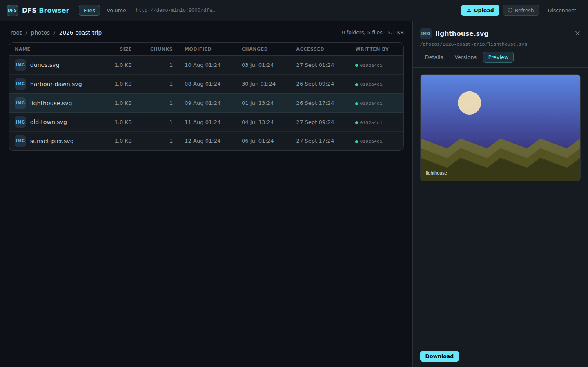
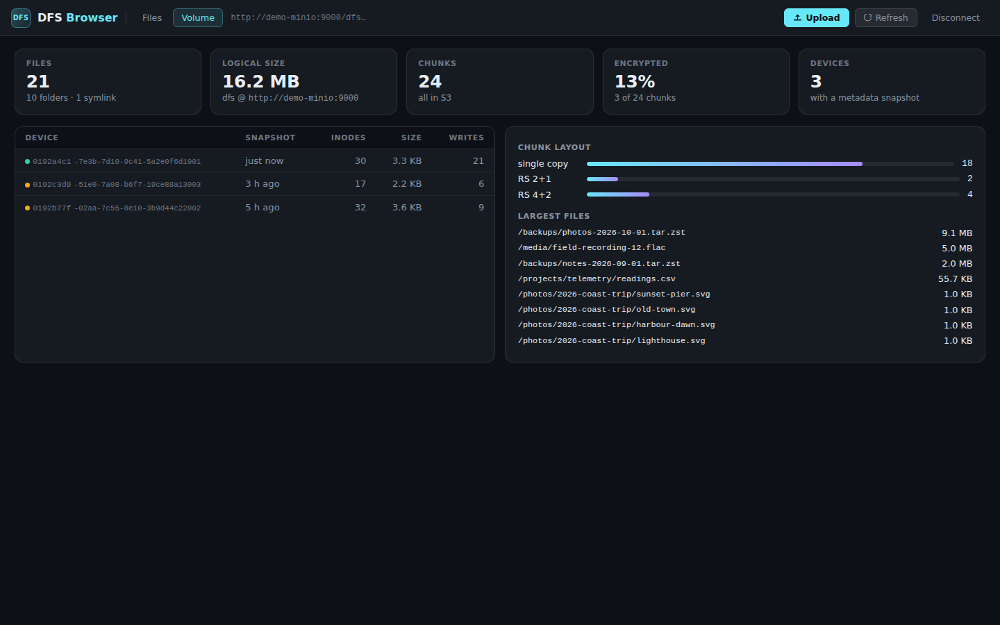

DFS Browser is a small web UI for DFS, the distributed FUSE filesystem over S3. Point it at the bucket and see the merged directory tree, every chunk and erasure-coded shard, encryption, the devices that wrote each file, and saved versions. No mount, no FUSE, no daemon.

All device snapshots combined into one tree, with sizes, chunk counts, times and the devices that wrote each file.
Every 4 MiB chunk with its checksum and S3 key; Reed-Solomon data and parity shards for erasure-coded files.
AES-256-GCM chunks are flagged and decrypted on demand when you log in with the master key.
Saved versions from meta/versions/, newest first, with the device that saved them.
Text, source files and images inline; downloads of plain, encrypted and erasure-coded files.
Counts, logical size, chunk layouts, encryption ratio, device snapshots and the largest files.




All screenshots come from the bundled demo volume. Every file, device and value is synthetic.
git clone https://github.com/mmiretta/dfsbrowser.git cd dfsbrowser docker compose --env-file demo/demo.env --profile demo up -d --build # open http://127.0.0.1:8888
The demo profile starts a throwaway MinIO seeded with a synthetic DFS volume. For your own bucket, set an endpoint allowlist and credentials as described in the deployment guide.